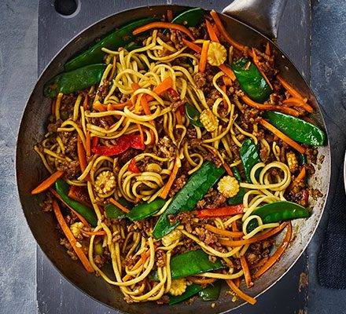

Chicken Stir Fry

Description
A stir-fry is a simple dish of meat or vegetables (and often both) that is cooked quickly in a wok over high heat.
Grab the wok and rustle up a tasty chicken stir-fry. Who needs takeaways when you can make tasty chow mein, sweet & sour chicken or Singapore noodles?
Ingredients
- 1 tbsp Honey
- Lemon Juice
- 250ml Chicken Stock
- 1 tbsp Spy Sauce
- 4 Chicken Breasts, cut into chunks
- 1 tbsp Cornflour
- 1 tsp Vegetable Oil
- 2 Carrots, finely sliced
- 1 Red Pepper, cut into chunks
- 140g Sugar Snap Pea
Method
- Step One
- In a jug, mix together the honey, lemon, stock and soy, then set aside. Toss the chicken with the cornflour so it's completely coated.
- Step Two
- Heat the oil in a non-stick frying pan, then fry the chicken until it changes colour and starts to become crisp around the edges.
- Step Three
- Add the carrots and red pepper, then fry for 1 min more.
- Step Four
- Pour the stock into the pan, bring to a simmer, then add the sugar snap peas and bubble everything together for 5 mins until the chicken is cooked and the veg are tender.
- Step Five
- Serve with noodles.